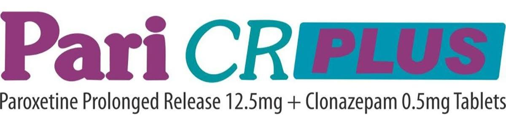

1) What percentage of your practice consist of anxiety disorders?
*
0-10%
10-30%
30-50%
More than 50%
2) Paroxetine as an anti-depressant is preferred in treatment of which of the following conditions?
*
Major Depression
Obsessive-Compulsive Disorder
Panic Disorder
Social Anxiety
Post-Traumatic Stress Disorder
Generalized Anxiety Disorder
3) Which of the following treatments do you prefer as an add on to SSRI therapy?
*
TCAs
Benzodiazepines
Valproate
CBT
4) In which of the below drugs showing no complete response, do you recommend augmentation therapy?
*
Benzodiazepines
Buspirone
Beta Blockers
Tricyclic Antidepressants
Valproate Sodium
5) Why is combined Paroxetine and Clonazepam treatment compared to Paroxetine monotherapy for panic disorder more advantageous?
*
A rapid reduction of symptoms in Mixed Anxiety Depressive Disorder
More rapid response than with the SSRI alone
Benzodiazepine taper after a few weeks may provide early benefit
Avoid the potential adverse consequences of long-term combination therapy
All of the above.
6) Co-administration of Benzodiazepine and antidepressant treatment produces which of the following effects?
*
Increased adverse effects
Patient reluctance to discontinue Benzodiazepine
Benzodiazepine withdrawal symptoms
Any other
7) Clonazepam together with Escitalopram increases which of the below side effects:
*
Dizziness
Drowsiness
Confusion
Difficulty Concentrating
Elderly, may also experience impairment in thinking, judgment, and motor coordination.
8) Where do you prefer bilayer technology of Paroxetine + Clonazepam (Pari CR Plus & Pari CR Forte)?
*
Rapid relief of anxiety symptoms
Lesser adverse events
Better patient compliance
Any other
9) How do you rate the bilayer technology of Paroxetine + Clonazepam in Mixed Anxiety Depressive Disorder as a therapeutic modality?
*
Excellent
Good
Satisfactory
Poor
10) For how long do you recommend Paroxetine + Clonazepam in Mixed Anxiety Depressive Disorder patients?
*
1-2 months
3-4 months
4-6 months
More than 6 months